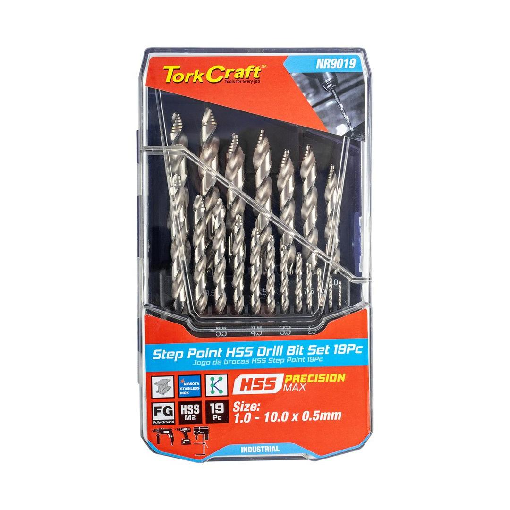
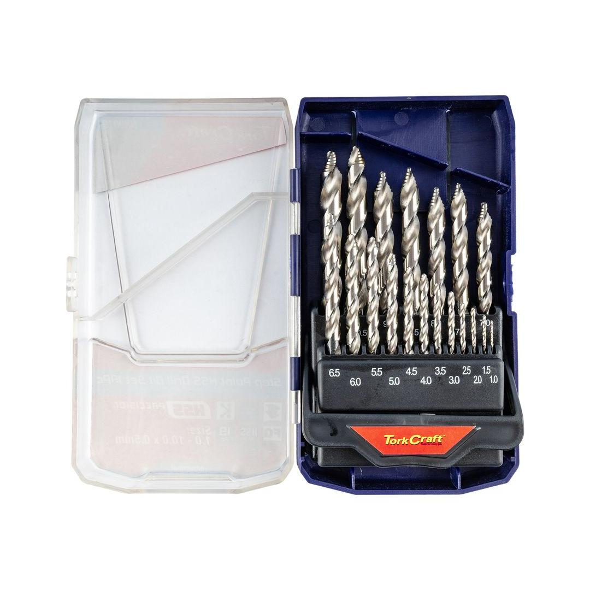
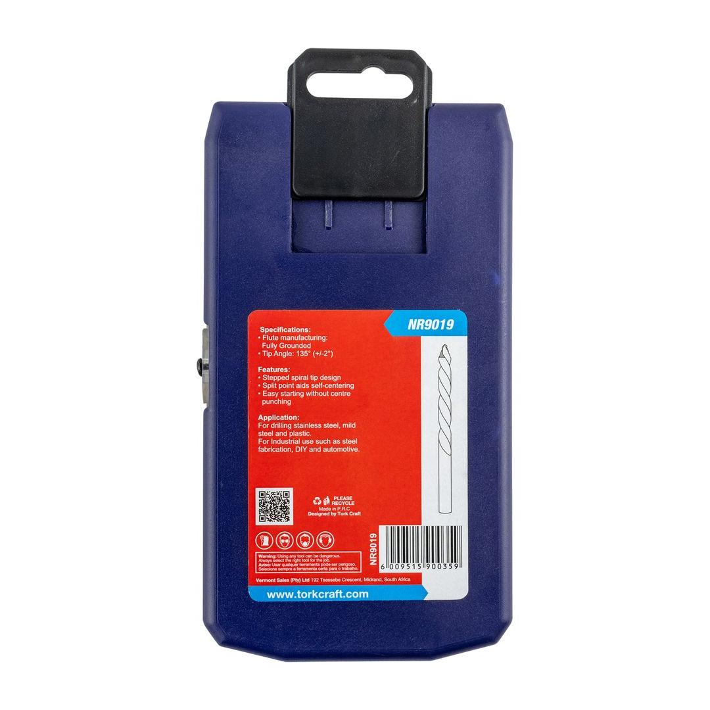

NR9019
1577.23



Content: Ø1, 1.5, 2, 2.5, 3, 3.5 4, 4.5, 5, 5.5, 6, 6.5, 7, 7.5, 8, 8.5, 9, 9.5, 10mm
A Precision-Max step point drill set is a versatile tool designed for creating precise holes in various materials. These drill bits are characterized by their unique stepped design, which allows for a wider range of hole sizes to be drilled without changing the drill bit.
Application: